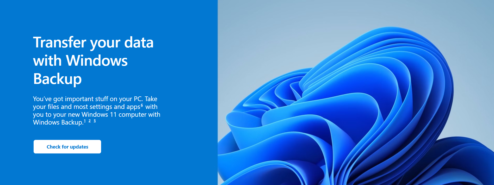

Windows Backup is part of the latest update for Windows 11 PCs. When you sign in with your Microsoft account, Windows Backup will help you securely save and transfer what’s important to you.5 6
The best, most secure way to back up your Windows 11 PC is with OneDrive.2 Easily move your files and memories to the cloud, then access them on your new computer.3


When you save what you love on your old PC, Windows Backup will save you time by automatically moving your data to your new computer.3
When you set up your new Windows 11 PC, you’ll be able to restore your stuff and settle into the best Windows experience ever.

When you’re ready to make the move, follow these instructions to save, then transfer your files and most settings and apps6 to your new Windows 11 PC.5

Make sure you’re using the newest version of Windows 11 on your current PC. Check for updates

Use the Search bar in Windows 11 to find and open Windows Backup, then follow the prompts to save your stuff to your Microsoft account.3
The first time you start your new Windows 11 PC, sign into your Microsoft account, then follow the prompts to make your new PC feel like home.3 5 6
Any iPhone with iOS 14.0 or later.2
It's not compatible with iPad.
If you have Windows 11, Phone Link will come preinstalled.
If you have Windows 11, Phone Link will come preinstalled.
If you have Windows 11, Phone Link will come preinstalled.
If you have Windows 11, Phone Link will come preinstalled.
If you have Windows 11, Phone Link will come preinstalled.
Get help with your transition to Windows 11,
and make the most of your Windows experience.
Securely save and share what’s important to you with OneDrive, Microsoft’s cloud-based storage that allows you to access and organise your documents, photos, and more wherever you are.
Learn moreSee the new Windows 11 features and updates, compare them to features you know in Windows 10, and find the right version of Windows 11 for you.
Learn moreIntuitive navigation. Easy organisation. Faster performance. Plus, new features to unlock your productivity and creativity. Learn more and see why Windows 11 is the best Windows ever.
Learn more